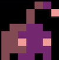
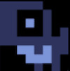
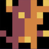

<header>
  <input id="chord-1" value="1" type="radio" name="chord" />
  <input id="chord-2" value="2" type="radio" name="chord" />
  <input id="chord-3" value="3" type="radio" name="chord" />
  <input id="chord-4" value="4" type="radio" name="chord" />
  <input id="chord-5" value="5" type="radio" name="chord" />
  <ul>
    <li><label for="chord-1"></label></li>
    <li><label for="chord-2"></label></li>
    <li><label for="chord-3"></label></li>
    <li><label for="chord-4"></label></li>
    <li><label for="chord-5"></label></li>
  </ul>
</header>

<style>
  html,
  body {
    height: 100%;
  }

  header {
    overflow: hidden;
    height: 100%;

    input {
      position: absolute;
      left: -9999px;

      @for $i from 1 through 5 {
        &#chord-#{$i}:checked~ul label[for="chord-#{$i}"] {
          background: tomato;
        }
      }
    }

    ul {
      height: 100%;
      list-style: none;
      margin: 0;
      padding: 0;
      display: flex;

      li {
        flex: 1;

        label {
          height: 100%;
          display: block;
          cursor: pointer;
          text-align: center;
          padding: 0.5rem;
          background: black;
          color: white;
          display: flex;
          flex-direction: column;
          justify-content: center;
          align-items: center;
          font-size: 3rem;
        }

        img {
          max-width: 100%;
          max-height: 100%;
        }

        + li {
          border-left: 4px solid #191919;
        }
      }
    }
  }
</style>

<script src="https://tonejs.github.io/build/Tone.js"></script>
<script>
  console.clear();

  // UPDATE: there is a problem in chrome with starting audio context
  //  before a user gesture. This fixes it.
  var started = false;
  document.documentElement.addEventListener('mousedown', () => {
    if (started) return;
    started = true;

    const $inputs = document.querySelectorAll('input'),
      chords = [
        'A4 C#5 E6', 'F1 A2 C3', 'G3 B3 D3',
        'D2 F2 A2', 'E2 G2 B2'
      ].map(formatChords);
    console.log(chords);
    var chordIdx = 0,
      step = 0;

    const synth = new Tone.Synth();
    const gain = new Tone.Gain(0.7);
    synth.oscillator.type = 'sine';
    gain.toMaster();
    synth.connect(gain);

    Array.from($inputs).forEach($input => {
      $input.addEventListener('change', () => {
        if ($input.checked) handleChord($input.value);
      })
    });

    function handleChord(valueString) {
      chordIdx = parseInt(valueString) - 1;
    }

    Tone.Transport.scheduleRepeat(onRepeat, '16n');
    Tone.Transport.start();
    Tone.Transport.bpm.value = 90;

    function onRepeat(time) {
      let chord = chords[chordIdx],
        note = chord[step % chord.length];
      synth.triggerAttackRelease(note, '16n', time);
      step++;
    }

    function formatChords(chordString) {
      return chordString.split(' ');
    }
  });
</script>